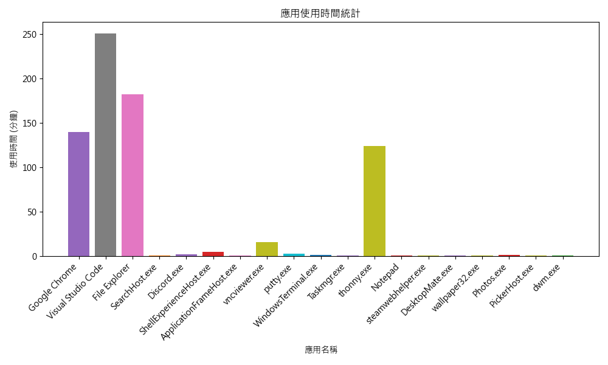
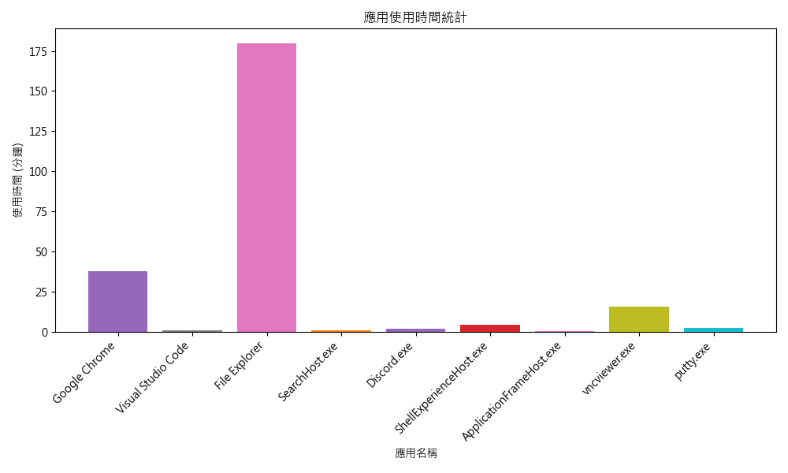

每日活動紀錄
紀錄每天的電腦使用情況與學習進度
使用統計
時間追蹤
學習記錄

管理員
•
2025-02-15
02月15日
今天使用者主要使用了 Visual Studio Code 和 thonny 進行程式開發，並且使用了 Google Chrome 進行網頁瀏覽。使用者也花了一些時間在 File Explorer 上進行檔案管理，並使用了 vncviewer 和 putty 進行遠端連線。除此之外，使用者還使用了 Discord 進行通訊。
工作 學習 通訊

管理員
•
2025-02-13
02月13日
使用者今天主要使用了檔案總管進行檔案管理，並且花了一些時間在 Google Chrome 上進行網頁瀏覽。此外，使用者還使用了 Visual Studio Code 進行程式開發，並使用了 vncviewer 和 putty 進行遠端連線。使用者也花了一些時間在 Discord 上進行通訊。
工作 學習 通訊


使用統計概覽
15
總記錄天數
8.5
平均使用時數
12
主要應用程式
95%
學習時間占比